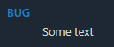

Introduction
The Dev Hub is the shared developer area. It contains Markdown (.md) files that describe everything that supports development work but is not part of the product/API documentation itself. Dev Hub is for:
- How we work?
- How we support development?
The Dev Hub is a branch that is common to all projects. Do not place project's design/architecture, API docs, or feature documentation in this branch, those belong under the normal Doxygen sections (Namespaces, Concepts, Classes, etc.) or under the two project specific branches have been created: Dependencies and Architecture.
Additional Branches
Additional branches are Markdown-only documentation branches injected into the root navigation structure of the generated Doxygen output. They contain Markdown (.md) files and, when needed, supporting image files. Each branch fills a gap in the standard Doxygen-generated output and provides a more complete documentation structure. The HTML page name generated for a Markdown file by Doxygen is derived from its page ID. doxy-plus.js filters these generated pages using known page ID prefixes and then creates special branches in the root navigation structure.
Rules
- Allowed Characters: File names, folder names, page IDs, and section IDs should use only a-z, 0-9, and _.
- Root Folder: Place all files and folders for a branch inside a single root folder. This provides one clear location for the branch files.
- Page ID Prefix: All Markdown page IDs in a branch should use the branch-specific page ID prefix. Each prefix should start with dp_ e.g. dp_dh_, dp_dep_, etc.
- Contents File: Since Markdown page hierarchy depends on \subpage links, and doxy-plus.js discards the link of any node that has child nodes, a dedicated minimal contents file is needed to form a tree-like structure.
- For example, this is an entire contents file:
\page dp_dh_dir_settings Settings
\subpage dp_dh_basic_settings
\subpage dp_dh_expert_settings
\subpage dp_dh_dir_misc_settings
- Settings becomes the branch name.
- The pages with IDs dp_dh_basic_settings and dp_dh_expert_settings become child pages.
- The page with ID dp_dh_dir_misc_settings becomes a sub-branch of Settings only if it contains its own \subpage links. Otherwise, it is treated like any other child page.
- It is recommended to keep a normal folder hierarchy for Markdown pages in the file system, add a dedicated _contents.md file to each folder, and use dir_ after the page ID prefix for contents files. Example: dp_dh_dir_some_contents_file.
- Top-Level Contents ID: This is the page ID of the top-level contents file placed in the root folder. This ID is hardcoded in doxy-plus.js and is used as the starting point for discovering the branch pages.
- Section ID Prefix: To make references easier and avoid collisions, section IDs should use the parent page or section ID as their prefix, separated by two underscores. Example: dp_dh_page_id__section_id.
Types
- Project-Independent BranchesThese branches do not vary from project to project. It has its own dedicated root folder where all Markdown files related to the branch are placed. If image files are needed, then add a dedicated image folder. The root folder has to be added to the INPUT tag and the image folder (if present) has to be added to the IMAGE_PATH tag in the Doxyfile.
- Project-Dependent BranchesThese branches belong to a specific project and share resources with that project. The root folder for this branch should be placed in the project root. Since these branches share resources with the project, no additional image folder is required. Also, if the full project folder and its subfolders are already included in the Doxygen INPUT path, then the branch root folder does not need to be added manually.
Dev Hub Branch
This branch contains documentation pages related to:
- Documentation setup,
- Generated output customization,
- IDE, Windows, etc. settings,
- Integration to other structures (e.g. GitHub)
- Anything that is project-independent and should be included in documentation.
Type: Project-Independent Branches
Example:
- Root folder: E:/Doxy/_dev
- Image folder: E:/Doxy/_dev/_images
| Attribute | Value |
| Root Folder | E:/Doxy/_dev (Recommended) |
| Page ID Prefix | dp_dh_ |
| Contents ID Prefix | dp_dh_dir_ |
| Top-Level Contents ID | dp_dh_dir_dev_hub |
Dependencies Branch
This branch contains documentation pages related to:
- External tools, library, Assets, resources, etc.
- Anything that the project depends on, but that are not part of the core project codebase and therefore not documented through the project source files alone (.h, .cpp, etc.).
Type: Project-Dependent Branches
| Attribute | Value |
| Root Folder | <project-root>/_dependencies (Recommended) |
| Page ID Prefix | dp_dep_ |
| Contents ID Prefix | dp_dep_dir_ |
| Top-Level Contents ID | dp_dep_dir_dependencies |
Architecture Branch
This branch contains documentation pages related to:
- Important design decisions,
- Internal structure,
- Major systems,
- Why specific parts are implemented the way they are.
Type: Project-Dependent Branches
| Attribute | Value |
| Root Folder | <project-root>/_architecture (Recommended) |
| Page ID Prefix | dp_arch_ |
| Contents ID Prefix | dp_arch_dir_ |
| Top-Level Contents ID | dp_arch_dir_architecture |
Automatic Pages
Some pages are generated automatically based on the usage of special predefined tags in the Doxyfile. These pages collect important tagged items in a single place for easier reviewing, tracking and maintenance. If the given tag is never used in any file then the page is not generated at all (hence "Automatic").
The tags are defined using the ALIASES tag in Doxyfile. The basic structure is:
ALIASES += "tag_name=\xrefitem page_id \"Source_Text\" \"Page_Title\""
Here:
- tag_name : This is the tag to be used.
- page_id : This is the page ID assigned to the automatically generated page.
- Source_Text : This is the text marker shown at the source (can be hidden, see Hide xrefitem Text at Source).
- Page_Title : Title assigned to the automatically generated page with page_id.
- Note
- Use += instead of = when defining aliases in the Doxyfile, so that existing aliases are not overwritten.
The tag can then be used anywhere in the documentation. For example:
\tag_name Some text
\tag_name See page \ref some_page_id
\tag_name See section \ref some_section_id
\tag_name See page \ref some_page_id "Special text to replace text from ref source"
All usages of the tag are collected on a single generated page with the page ID page_id. This is useful for collecting similar items in one place, such as requirements, bugs, warnings, notes, etc.
Project Required Page
This page collects all project related content tagged as required. When it appears, it is placed under the Dependencies Branch (the branch is created if needed).
ALIASES += "dep_req=\xrefitem dp_dep_required \"REQUIRED\" \"Required\""
- Note
- Do not use this tag for files inside the Dev Hub branch.
Dev Hub Required Page
This page collects all Dev Hub related content tagged as required. When it appears, it is placed under the Dev Hub Branch (the branch is created if needed).
ALIASES += "dh_req=\xrefitem dp_dh_required \"REQUIRED\" \"Required\""
- Note
- Use this tag only for files inside the Dev Hub branch.
Dev Hub Bugs Page
This page collects all Dev Hub related content tagged as bug. When it appears, it is placed under the Dev Hub Branch (the branch is created if needed).
ALIASES += "dh_bug=\xrefitem dp_dh_bugs \"BUG\" \"Bugs List\""
- Note
- Use this tag only for files inside the Dev Hub branch.
Markdown Tips & Tweaks
This section describes how to manipulate Markdown files.
For some of these sections, special code has been inserted in doxy-plus.css file. The selectors used in these codes are #doc-content > div > div.contents ... so that these rules only apply to Markdown files, for non-Markdown files the div.contents exists at #doc-content > div.contents.
Adding Links
The basic Markdown link syntax is:
For normal external links:
[Doxygen configuration manual](https://www.doxygen.nl/manual/config.html)
For Doxygen documentation pages, prefer \ref when linking to a page ID:
See \ref dp_doxyfile_full_code for the full file content.
With custom link text:
See \ref dp_doxyfile_full_code "Doxyfile full code".
More examples:
[Open Doxygen manual](https://www.doxygen.nl/manual/index.html)
[Open another Markdown file](other-file.md)
[Open a file in another folder](../docs/other-file.md)
[Go to a section in this file](#main-files)
[Go to a section in another file](other-file.md#main-files)
Adding Images
Images can be inserted in Markdown pages using the standard Markdown image syntax:

Recommended setup:
- Create an _images/ folder at the root.
- In Doxyfile, add the image folder to IMAGE_PATH:
- Copy the image file into _images/. Example:
- Reference the image from a Markdown file:

If needed, an explicit relative path can also be used:

Width and height can also be adjusted as needed:
{html: width=400px height=250px}
{html: width=128px height=auto}
{html: width=60% height=auto}
- Warning
- Keep image basenames globally unique across all IMAGE_PATH folders; otherwise, collisions can occur.
- If you set both width and height, the browser may stretch/squash the image unless the ratio matches the original image.
Inserting Anchors
Since we cannot add section ID to non-headings, to reference a non-heading part we can add an anchor like this:
Some text before.
\anchor dp_some_marker
This paragraph can now be referenced from somewhere else.
Reference it with:
With custom link text:
See \ref dp_some_marker "this specific point"
- Note
- Anchors follow the same rules as Section ID Prefix (see Additional Branches : Rules).
Force New Line
When we have a new line in the Markdown file, it does not always translate to new line in Doxygen generated output. Sometimes, we need to leave a gap line and that creates a new paragraph instead of just line break. To achieve line break use <br>, for example:
This will produce:
Line One.
Line Two.
Force Visual Indent
An indentation in Markdown file does not mean that Doxygen generated page will have the same indentation, to force an indent use HTML non-breaking space
Line One.<br>
Line Two.
This will produce output like:
Line One.
Line Two.
Hide xrefitem Text at Source
When a Doxygen ALIASES based on \xrefitem is used (see Automatic Pages), Doxygen also shows the generated entry at the place where the alias is written.
For example, if the Markdown file contains:
the generated page shows the local BUG entry at that location:

This can sometimes be useful, but often it is not needed. To hide the local output, wrap the alias usage in an HTML element:
\htmlonly <div class="dp-hidden-xrefitem"> \endhtmlonly
\dh_bug Some text
\htmlonly </div> \endhtmlonly
This wraps the generated local output in an HTML div with the class dp-hidden-xrefitem. In doxy-plus.css, the following rule hides this class completely:
#doc-content > div > div.contents > div.textblock .dp-hidden-xrefitem {
display: none;
}
This removes the local output from the source page while still keeping the entry on the collected destination page, such as Dev Hub > Bugs List.
Add Line Gap When Needed
Text, especially numbered or bullet lists, may not show any visible gap between two items in the generated output from a Markdown file, no matter how many blank lines are placed between them. Sometimes additional separation is needed to make two items look visually separated. To add a visible gap, use:
- Point one
<div class="dp-markdown-list-gap"></div>
- Point Two
This creates a div with the class dp-markdown-list-gap between the two list items. In doxy-plus.css, the following rule assigns a height of one line to this item:
#doc-content > div > div.contents > div.textblock .dp-markdown-list-gap {
height: 1em;
}
Big Non-Heading Texts
To have bigger than normal texts in a Markdown file without creating a heading use:
<span class="dp-markdown-big-text">Some Text</span>
This wraps the generated text in an HTML span with the class dp-markdown-big-text. In doxy-plus.css, the following rule changes the text appearance:
#doc-content > div > div.contents > div.textblock .dp-markdown-big-text {
font-size: 1.3em;
font-weight: 500;
}